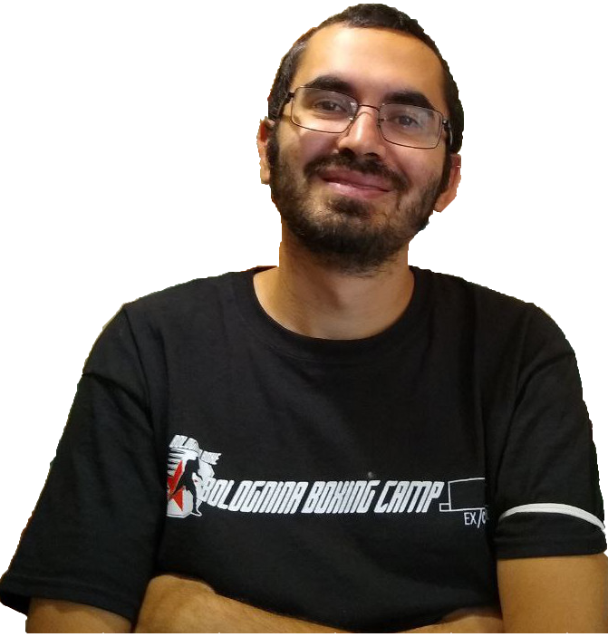
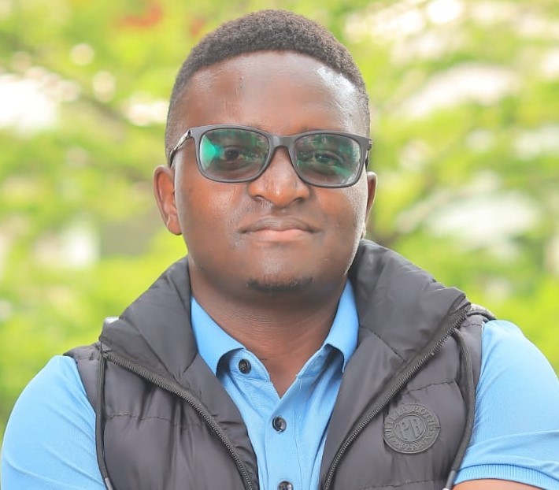
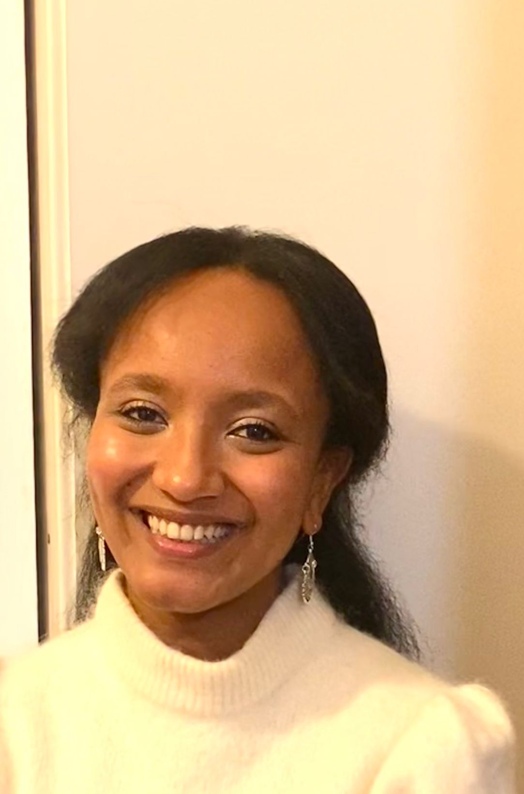
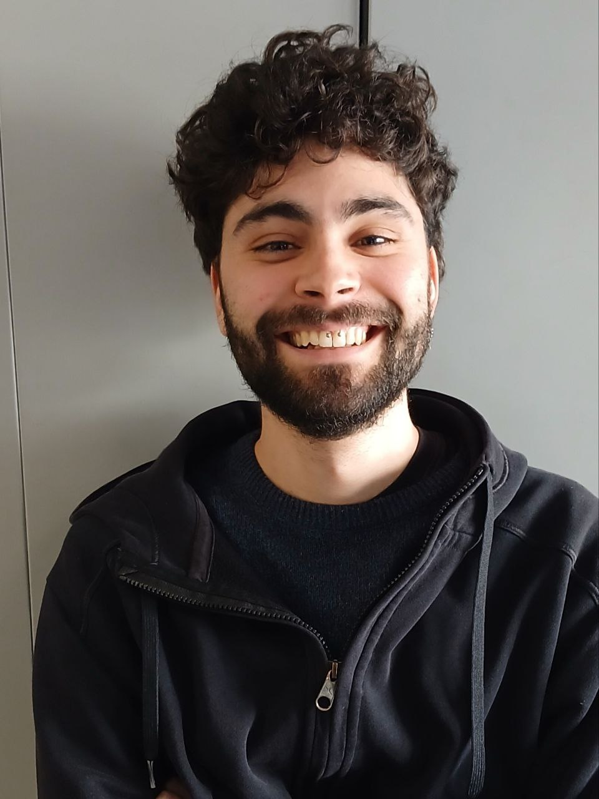

Davide studied Chemistry at Sapienza - University of Rome. In 2021, he got his Ph.D. in Theoretical Chemistry at the University of Vienna under the supervision of Prof. Leticia González. His thesis focused on the simulation of light-induced DNA binding and damage. In his first Postdoctoral experience, he focused on method and software development for QM/MM photochemical simulations in complex environments, under the supervision of Prof. Marco Garavelli at the University of Bologna. Later, he moved for a postdoctoral stay at the University of Toronto in the group of Prof. Alán Aspuru-Guzik, where he focused on machine learning for chemical and biochemical applications. He joined Chimie ParisTech in February 2024 as an Assistant Professor (Maître de Conferences).

Jeremiah is a PhD student at Chimie ParisTech in co-tutele with the University of Nairobi, working on the computational and spectroscopic analysis of pesticide molecules. His research focuses on the integration of Raman and near-infrared (NIR) spectroscopy with quantum chemical calculations to study molecular vibrational properties. The project involves density functional theory (DFT) simulations of vibrational spectra, modelling of degradation pathways, and the application of machine learning methods for spectral analysis and classification.

Mary is a Master’s student in Photochemistry and Molecular Materials at the University of Bologna. She joined the team with an Erasmum scholarship for her final Master's internship. Her project focuses on the computational modelling of NIR-activated photocages, investigating excited-state properties and photochemical pathways using advanced quantum chemical methods, including testing the performances of MRSF-TDDFT on these systems.

Pietro is a master student of Florence University and PSL University. His master project focuses on modelling proton-transfer photochemical reaction through nonadiabatic dynamics, studying the TD-DFT ability to perform such calculations.